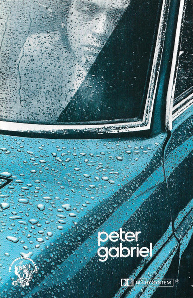

CASSETTE
Peter Gabriel
Peter Gabriel
Media: — · Sleeve: —
—
Personal
Discogs SuggestedCA$31.42
Discogs MedianCA$31.42
Discogs HighCA$31.42
- Physical Copy ID
- BB-CAS-133
- Year
- 1977
- Label
- Charisma
- Catalog #
- 7208 612
- Country
- GBUK
- Genre / Style
- Rock · Pop Rock